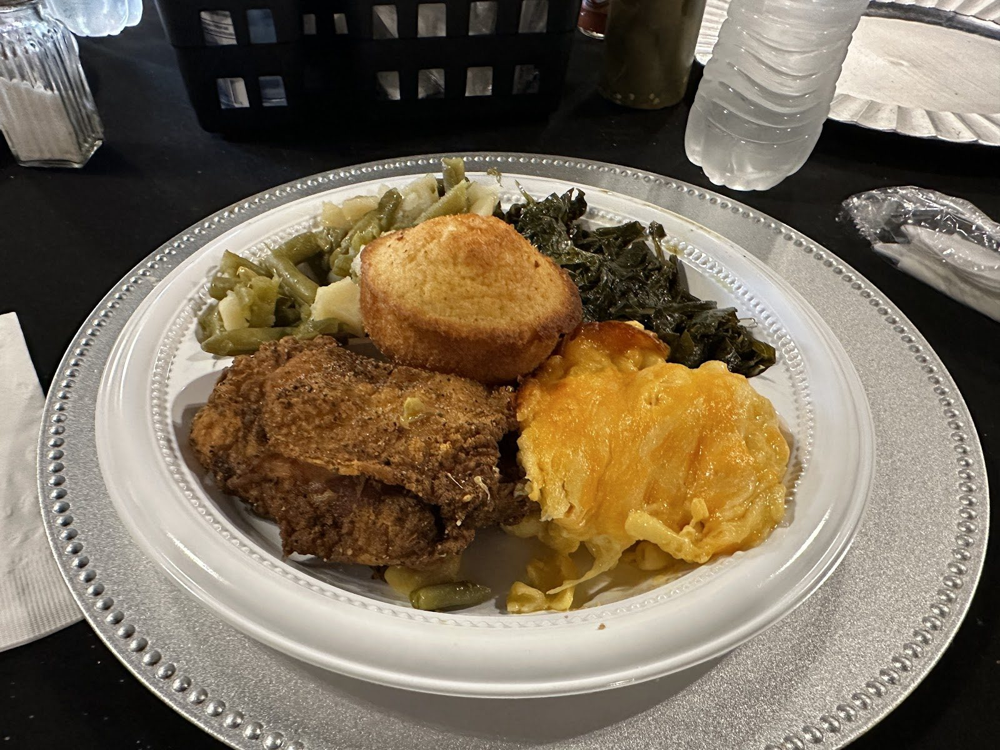
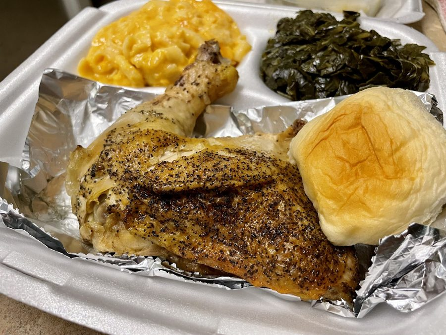
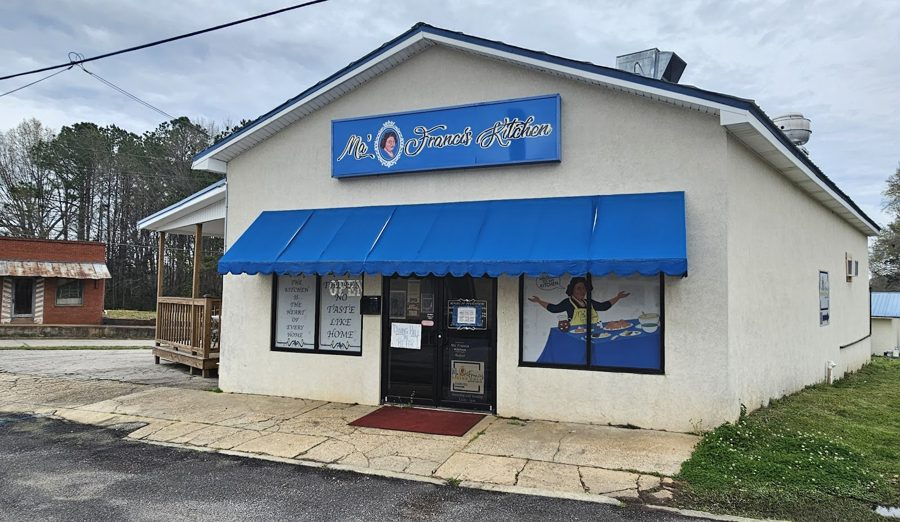
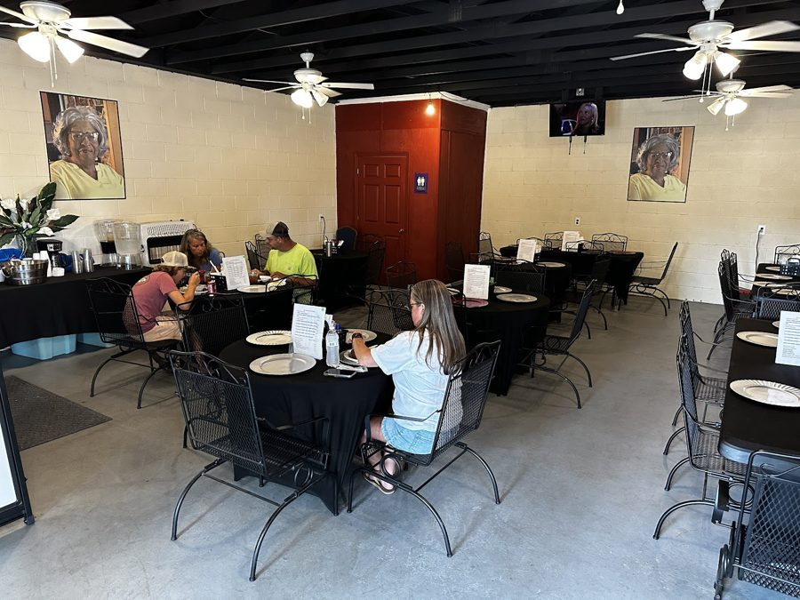
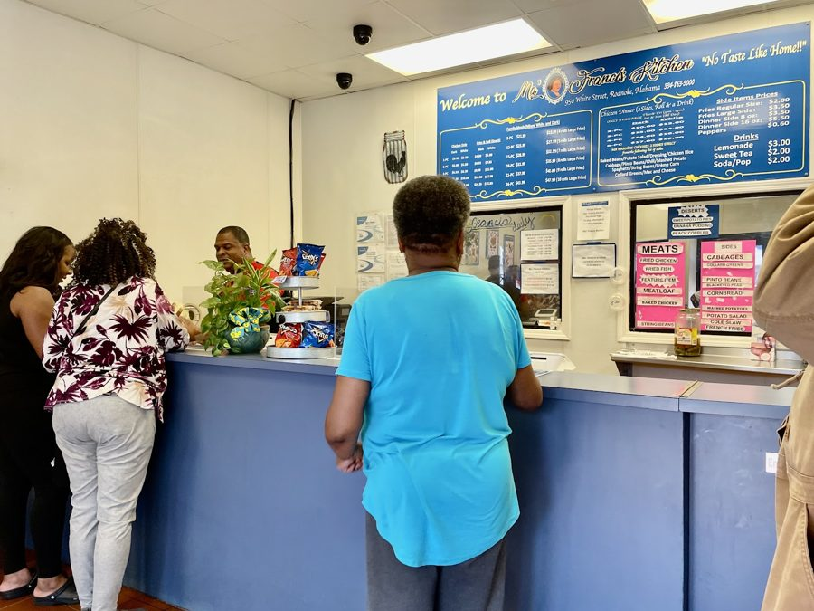

Southern cooking, served like family.
A family-run kitchen in Roanoke, Alabama. Fresh meats, plenty of homemade sides and peach cobbler, Thursday to Sunday.

A meat, two sides and cobbler.
Pick a meat and your sides from the line. The family cooks the vegetables fresh, the way a grandmother would.
On Sundays the buffet moves to the annex out back.
From the line
- Meats
- Baked chicken, meatloaf, catfish, baked pork chop
- Sides
- Collards, mac and cheese, black-eyed peas
- Desserts
- Peach cobbler, banana pudding, sweet potato soufflé
- Sundays
- Buffet in the annex
Open four days, 11 to 5.
- MondayClosed
- TuesdayClosed
- WednesdayClosed
- Thursday11 to 5
- Friday11 to 5
- Saturday11 to 5
- SundayBuffet, 11 to 5
Come on in.




“It was delicious! It all tasted fresh.”
From a Google review, October 2026
Pull up a chair.
- Address
- 123 Example St, Roanoke, AL
- Phone
- 123-456-789
- Open
- Thursday to Sunday, 11 AM to 5 PM
- Sundays
- Buffet in the annex